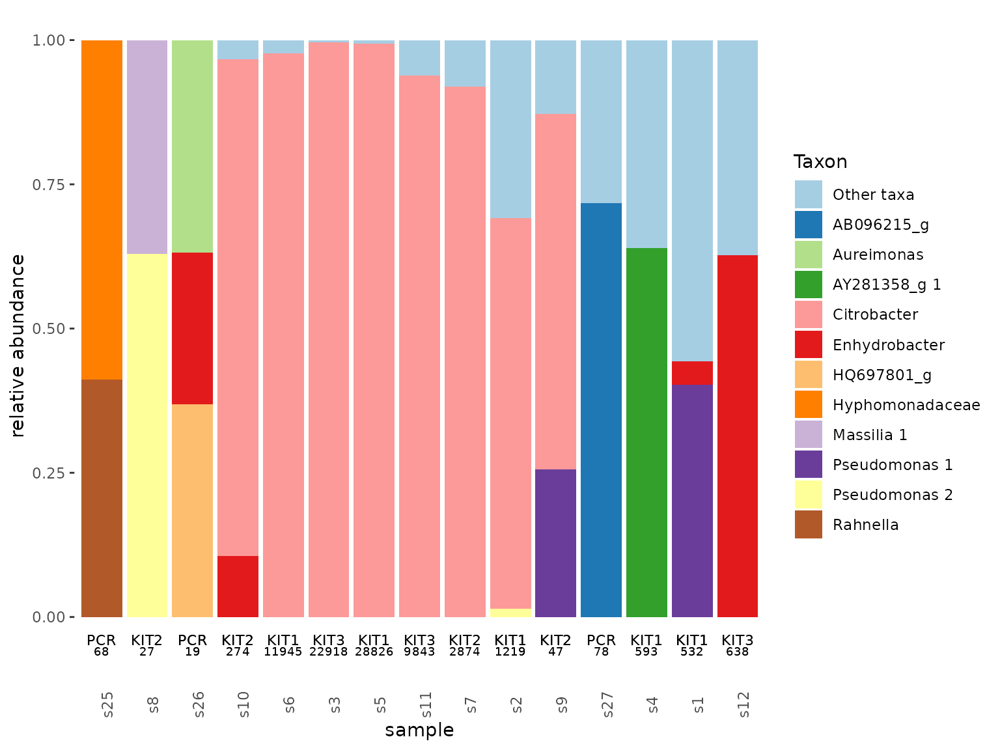

Taxa and sample quality control
Wenke Smets
2024-04-03
Source:vignettes/data-processing.Rmd
data-processing.RmdTaxa and sample quality control
2024-04-03
This tutorial walks you through some quality checks when first diving into a dataset of taxonomic compositions. Note that this tutorial does not include sequence quality filtering, as we are assuming this was already done by for example DADA2. Here we will focus on filtering the dataset to keep only bacterial reads, inspect blanks, and removing samples with too few reads. How you handle these steps may depend on your dataset, but here’s a demonstration to give you an idea of your options.
Our data
The data for this tutorial is found in the tidytacos object ‘leaf’. This data comes from a study where the phyllosphere microbiome of plants is treated. After sampling, before DNA extraction a spike bacterium was added to all samples to serve as an internal standard to determine absolute abundances of the bacteria in our samples (as explained in Smets et al. 2016).
tacosum(leaf)## n_samples n_taxa n_reads
## 33 6054 4389396Filter out undesired taxa
In this study, we choose to sequence the V4 region of the 16S rRNA
gene to specifically study the bacterial fraction of our microbial
community, hence filter_taxa is used to discard any
non-bacterial reads such as mitochondria, chloroplasts, and archaea.
Using tacosum before and after the filtering helps us
understand that only 60% of our reads were bacterial. In phyllosphere
samples it is not uncommon to find a large fraction of chloroplasts
and/or mitochondria, plant cell organelles which contain a 16S rRNA
gene, hence the substantial loss of reads in this step.
before <- tacosum(leaf)[3]
leaf <- leaf%>%
filter_taxa(kingdom == "Bacteria")
tacosum(leaf)## n_samples n_taxa n_reads
## 33 5589 2634933
after<-tacosum(leaf)[3]
after/before## n_reads
## 0.6002951Depending on the database you used for assigning taxonomy, you may need to adapt this code and use for example:
leaf <- leaf%>%
filter_taxa(class != "Chloroplast" | is.na(class))%>%
filter_taxa(family != "Mitochondria"| is.na(family))Read numbers and blanks
An important initial quality control is an investigation of the read
numbers per sample. The add_total_count function will add
total read counts per sample in the sample table. We can then visualize
the distribution of these read counts using ggplot.
leaf <- leaf%>%
add_total_count()
ggplot(leaf$samples, aes(x = log10(total_count), y = sample, color = Plant))+
geom_point()Unfortunately, one sample (bottom right corner) took up a lot of the reads of this sequencing run, decreasing sampling depth of all other samples. Nevertheless, most samples have more than 1000 reads, which we consider worthwhile. Blanks are on the low end of the spectrum in general, which is according to our expectation, but some blanks have quite some reads which requires further investigation.
Let’s look at the composition of our blanks. We use the
filter_samples function to generate a tidytacos object with
only the blanks. The tacoplot_stack function returns a nice
stacked bar plot visualization of the most abundant taxa in the
blanks.
leaf1 <- leaf%>%
filter_samples(Plant == "Blank")
tacoplot_stack(leaf1)+
geom_text(size = 3, aes(y=-0.04, label = Plot))+
geom_text(size = 2.5, aes(y=-0.06, label = total_count))
Citrobacter is suspiciously prevalent and occurs in multiple blanks! After checking its sequence, this ASV is the one that we spiked into our samples and many of our blanks to determine absolute bacterial numbers from the relative abundances. Hence, in this case, the high abundance of Citrobacter in the blanks is a good thing. Besides Citrobacter none of the contaminants are consistent nor do the read numbers of the blanks without spike exceed 1000 per sample, which are all good signs for the quality of our data.
We still need to set a minimum read number that a sample needs to have to be included in our analyses. Samples with really low read counts are too likely not being representative of the sampled microbiome by poor amplification, contamination, and/or insufficient sequencing depth. Usually, a minimum read number cut-off is quite an arbitrary decision, hopefully somewhat informed by the nature of your data and results from the blanks. In this case however, we have spiked our samples and several of our blanks and we can determine a threshold that is actually informed by the amount of contaminants in the blanks!
Absolute abundances
We added equal amounts of a spike taxon (Citrobacter) to all of our
samples and some of the blanks. This helps us calculate the absolute
abundances of the 16S gene copies per sample using the function
add_total_absolute_abundance. First we need to determine
the spike taxon_id. Using add_prevalence will help us
determine which taxa are present in all samples. After comparing
taxonomy and/or sequence with the information we have of our spike, we
can identify the spike taxon_id, which we need for the
add_total_absolute_abundance function.
leaf <- leaf%>%
add_prevalence(relative = T)
head(leaf$taxa)## # A tibble: 6 × 10
## kingdom phylum class order family genus species taxon taxon_id prevalence
## <chr> <chr> <chr> <chr> <chr> <chr> <chr> <chr> <chr> <dbl>
## 1 Bacteria Proteobac… Gamm… Ente… Enter… Citr… NA TACG… t6 0.788
## 2 Bacteria Proteobac… Gamm… Ente… Enter… Buch… NA TACG… t8 0.0303
## 3 Bacteria Proteobac… Beta… Burk… Oxalo… Mass… aurea/… TACG… t9 0.364
## 4 Bacteria Proteobac… Gamm… Ente… Enter… Buch… NA TACG… t11 0.0606
## 5 Bacteria Proteobac… Alph… Sphi… Sphin… Sphi… NA TACG… t12 0.515
## 6 Bacteria Actinobac… Acti… Fran… Geode… Blas… NA TACG… t14 0.485
leaf <- leaf%>%
add_total_absolute_abundance(spike_taxon = "t6", spike_added = added_spike_copies)
ggplot(leaf$samples, aes(x = Plant, y = log10(total_absolute_abundance)))+
geom_boxplot()+
geom_point()
contaminants <- leaf$samples%>%
filter(Plant == "Blank")%>%
filter(!is.na(total_absolute_abundance))%>%
summarize(mean = mean(total_absolute_abundance))
leaf <- leaf%>%
mutate_samples(potential_contamination = contaminants$mean/total_absolute_abundance)%>%
filter_samples(potential_contamination < 0.1)
tacosum(leaf)## n_samples n_taxa n_reads
## 16 5536 2551543We see that the estimated biomass in the samples is well above the estimated biomass in the blanks, which is again a good sign! As we would like to minimize our chances to have more than 10% of contamination in the samples, we decided to remove samples that have less than 10x more biomass than the mean biomass in the blanks. This results in a tidytacos object without blanks and without 2 samples which were of such low biomass that we considered them too sensitive to contamination. An excellent starting point to start analyses.